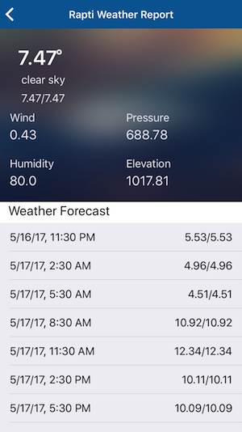

- Simple design
- Detailed 5 day forecast
- Multiple units
- Works with any city in the world
- Shows a list of locations that the user has bookmarked previously.
- One can remove locations from the list.
- User can add locations by placing a pin on map.
- Provides list of known locations with search capabilities.
- Once the user clicks on a bookmarked city this screen will appear.
- This screen offers -Today’s forecast, including: temperature, humidity, rain chances and wind information.
- It shows the 5-days forecast, including: temperature, humidity, rain chances and wind information.
- User can add locations by placing a pin on map.
Features:
Login screen:
Home screen:
City screen:

Map screen: